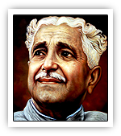
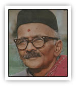
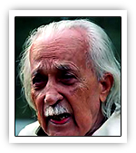
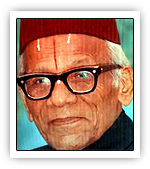
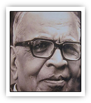
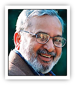
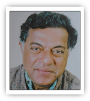
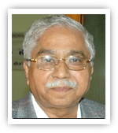

ಕನ್ನಡ ಜ್ಞಾನಪೀಠ ಪ್ರಶಸ್ತಿ ವಿಜೇತರು
ಭಾರತದ ಅತ್ಯುನ್ನತ ಸಾಹಿತ್ಯ ಪ್ರಶಸ್ತಿಯಾದ ಜ್ಞಾನಪೀಠ ಪ್ರಶಸ್ತಿ ಗೆದ್ದ ಕನ್ನಡದ ಪ್ರತಿಭಾವಂತ ಸಾಹಿತಿಗಳು
ಕುವೆಂಪು
1967
ಶ್ರೀ ರಾಮಾಯಣ ದರ್ಶನಂ ಕೃತಿಗಾಗಿ ಜ್ಞಾನಪೀಠ ಪ್ರಶಸ್ತಿ ಪಡೆದರು
ಡಾ. ರ. ಬೇಂದ್ರೆ
1972
ನಾಕುತಂತಿ ಕೃತಿಗಾಗಿ ಜ್ಞಾನಪೀಠ ಪ್ರಶಸ್ತಿ ಪಡೆದರು
ಶಿವರಾಮ ಕಾರಂತ
1977
ಮುಕಾಜಿ ಕೃತಿಗಾಗಿ ಜ್ಞಾನಪೀಠ ಪ್ರಶಸ್ತಿ ಪಡೆದರು
ಮಾಸ್ತಿ ವೆಂಕಟೇಶ ಅಯ್ಯಂಗಾರ್
1983
ಚಿಕ್ಕವೀರ ರಾಜೇಂದ್ರ ಕೃತಿಗಾಗಿ ಜ್ಞಾನಪೀಠ ಪ್ರಶಸ್ತಿ ಪಡೆದರು
ವಿ.ಕೃ. ಗೋಕಾಕ್
1990
ಭಾರತ ಸಿಂಧು ರಶ್ಮಿ ಕೃತಿಗಾಗಿ ಜ್ಞಾನಪೀಠ ಪ್ರಶಸ್ತಿ ಪಡೆದರು
ಯು.ಆರ್. ಅನಂತಮೂರ್ತಿ
1994
ಸಮಗ್ರ ಸಾಹಿತ್ಯ ಕೊಡುಗೆಗಾಗಿ ಜ್ಞಾನಪೀಠ ಪ್ರಶಸ್ತಿ ಪಡೆದರು
ಗಿರೀಶ್ ಕಾರ್ನಾಡ್
1998
ಯಕ್ಷಗಾನ ಮತ್ತು ನಾಟಕ ಕ್ಷೇತ್ರದ ಕೊಡುಗೆಗಾಗಿ ಜ್ಞಾನಪೀಠ ಪ್ರಶಸ್ತಿ ಪಡೆದರು
ಚಂದ್ರಶೇಖರ ಕಂಬಾರ
2010
ಸಮಗ್ರ ಸಾಹಿತ್ಯ ಕೊಡುಗೆಗಾಗಿ ಜ್ಞಾನಪೀಠ ಪ್ರಶಸ್ತಿ ಪಡೆದರು
ಕುವೆಂಪು
| ಜನನ | ಡಿಸೆಂಬರ್ ೨೯, ೧೯೦೪ ಹಿರೇಕೊಡಿಗೆ, ಕೊಪ್ಪ ತಾಲ್ಲೂಕು, ಚಿಕ್ಕಮಗಳೂರು ಜಿಲ್ಲೆ |
| ಕೃತಿ | ಶ್ರೀ ರಾಮಾಯಣ ದರ್ಶನಂ-೧೯೬೭ |
| ವೃತ್ತಿ | ಕವಿ, ಲೇಖಕ, ಪ್ರಾಧ್ಯಾಪಕ, ಪ್ರಾಂಶುಪಾಲ, ಕುಲಪತಿ |
| ಕಾವ್ಯನಾಮ | ಕುವೆಂಪು |
| ಪ್ರಮುಖ ಪ್ರಶಸ್ತಿಗಳು | ಜ್ಞಾನಪೀಠ ಪ್ರಶಸ್ತಿ, ಪದ್ಮ ವಿಭೂಷಣ ಪ್ರಶಸ್ತಿ, ಕರ್ನಾಟಕ ರತ್ನ ಪ್ರಶಸ್ತಿ, ಪಂಪ ಪ್ರಶಸ್ತಿ |
| ಮರಣ | ನವೆಂಬರ್ 11, 1994 ಮೈಸೂರು, ಕರ್ನಾಟಕ, ಭಾರತ |
| ಕೊಡುಗೆ | 1.ಕುವೆಂಪು ಅವರು ಯುಗಪ್ರವರ್ತಕ ಕವಿ. 2.ಕುವೆಂಪು ಅವರು 'ಶ್ರೀ ರಾಮಾಯಣ ದರ್ಶನಂ' ರಚಿಸುವ ಮೂಲಕ ಆಧುನಿಕ ಕಾಲದಲ್ಲಿ ಮಹಾಕಾವ್ಯ ರಚನೆಗೆ ನಾಂದಿ ಹಾಡಿದರು. 3.ಕುವೆಂಪು ಅವರು ತಮ್ಮ ಮೇರು ಕೃತಿ 'ಶ್ರೀ ರಾಮಾಯಣ ದರ್ಶನಂ'ನಲ್ಲಿ ಹೊಸ ಕಾಲಕ್ಕೆ ಅಗತ್ಯವೆನ್ನಿಸಿದ ದರ್ಶನವನ್ನು ಕಟ್ಟಿಕೊಟ್ಟಿದ್ದಾರೆ. 4.ಕುವೆಂಪು ಅವರು ವಿಶ್ವಮಾನವ ಸಂದೇಶ ನೀಡಿದ್ದಾರೆ. 5.ಕುವೆಂಪು ಅವರು ಮಂತ್ರಮಾಂಗಲ್ಯ ಎಂಬ ಸರಳ ವಿವಾಹ ಪದ್ಧತಿಯನ್ನು ರೂಢಿಗೆ ತಂದರು. 6.ಕುವೆಂಪು ಅವರು ತಮ್ಮ ಕನಸಿನ ಕೂಸಾದ ಮಾನಸ ಗಂಗೋತ್ರಿಯನ್ನು ಕಟ್ಟಿ ಬೆಳೆಸಿದ್ದಾರೆ. 7.ಕುವೆಂಪು ಅವರು ದಲಿತ ಹಾಗೂ ಬಂಡಾಯ ಚಳವಳಿಗಳಿಗೆ ಸ್ಫೂರ್ತಿಯಾಗಿದ್ದಾರೆ. 8.1985ರಲ್ಲಿ ಮೈಸೂರಿನಲ್ಲಿ ನಡೆದ ವಿಶ್ವ ಕನ್ನಡ ಸಮ್ಮೇಳನವನ್ನು ಉದ್ಘಾಟಿಸಿದರು. |
| ಗೌರವ/ ಪ್ರಶಸ್ತಿ ಪುರಸ್ಕಾರಗಳು | 1.ಜ್ಞಾನಪೀಠ ಪ್ರಶಸ್ತಿ (ಶ್ರೀ ರಾಮಾಯಣ ದರ್ಶನಂ) (೧೯೬೮) 2.ಪದ್ಮಭೂಷಣ (೧೯೫೮) 3.ರಾಷ್ಟ್ರಕವಿ ಪುರಸ್ಕಾರ (೧೯೬೪) 4.ಕರ್ನಾಟಕ ವಿಶ್ವವಿದ್ಯಾಲಯದಿಂದ ಗೌರವ ಡಿ.ಲಿಟ್. (೧೯೬೬) 5.ಕೇಂದ್ರ ಸಾಹಿತ್ಯ ಅಕಾಡೆಮಿ ಪ್ರಶಸ್ತಿ - (ಶ್ರೀರಾಮಾಯಣ ದರ್ಶನಂ) (1955) 6.ಪಂಪ ಪ್ರಶಸ್ತಿ (೧೯೮೮) 7.ಕರ್ನಾಟಕ ರತ್ನ (೧೯೯೨) 8.ಬೆಂಗಳೂರು ವಿಶ್ವವಿದ್ಯಾಲಯದಿಂದ ಗೌರವ ಡಿ.ಲಿಟ್. (೧೯೬೯) |
ಡಾ. ರ. ಬೇಂದ್ರೆ
| ಜನನ | ೧೮೯೬ ಜನವರಿ ೩೧ ಧಾರವಾಡ |
| ಕೃತಿ | ನಾಕುತಂತಿ-೧೯೭೩ |
| ವೃತ್ತಿ | ವರಕವಿ, ಶಿಕ್ಷಕರು |
| ಕಾವ್ಯನಾಮ | ಅಂಬಿಕಾತನಯದತ್ತ |
| ಪ್ರಮುಖ ಪ್ರಶಸ್ತಿಗಳು | 1.೧೯೪೩ರಲ್ಲಿ ಶಿವಮೊಗ್ಗದಲ್ಲಿ ನಡೆದ ಸಾಹಿತ್ಯ ಸಮ್ಮೇಳನದ ಅಧ್ಯಕ್ಷತೆ. 2.೧೯೫೮ರಲ್ಲಿ 'ಅರಳು ಮರಳು' ಕೃತಿಗೆ ಕೇಂದ್ರ ಸಾಹಿತ್ಯ ಅಕಾಡೆಮಿ ಪ್ರಶಸ್ತಿ 3.೧೯೬೪ರ ಮೈಸೂರು ದಸರಾ ಕಾರ್ಯಕ್ರಮದಲ್ಲಿ ಬೇಂದ್ರೆಯವರಿಗೆ ಸನ್ಮಾನ 4.೧೯೬೫ರಲ್ಲಿ ಮರಾಠಿಯಲ್ಲಿ ರಚಿಸಿದ "ಸಂವಾದ" ಎಂಬ ಕೃತಿಗೆ ಕೇಳ್ಕರ್ ಬಹುಮಾನ 5.೧೯೬೮ರಲ್ಲಿ 'ಪದ್ಮಶ್ರೀ' ಪ್ರಶಸ್ತಿ ಲಭಿಸಿತು 6.೧೯೭೩ರಲ್ಲಿ 'ನಾಕುತಂತಿ' ಕೃತಿಗೆ ಜ್ಞಾನಪೀಠಪ್ರಶಸ್ತಿ 7.ಕಾಶಿ ವಿದ್ಯಾಪೀಠ, ವಾರಣಾಸಿ, ಮೈಸೂರು ಹಾಗೂ ಕರ್ನಾಟಕ ವಿಶ್ವವಿದ್ಯಾನಿಲಯಗಳ ಗೌರವ ಡಾಕ್ಟರೇಟ್ 8.ಕೇಂದ್ರ ಸಾಹಿತ್ಯ ಅಕಾಡೆಮಿಯ ಫೆಲೋಷಿಪ್ ಪಡೆದರು. |
| ಮರಣ | ೧೯೮೧ ಅಕ್ಟೋಬರ ೨೬ ಮುಂಬಯಿ |
| ದತ್ತಾತ್ರೇಯ ರಾಮಚಂದ್ರ ಬೇಂದ್ರೆ ಕನ್ನಡದ ಪ್ರಸಿದ್ಧ ಕವಿ ಹಾಗೂ ಕಾದಂಬರಿಕಾರರು. ಬೇಂದ್ರೆಯವರು ಕರ್ನಾಟಕದಲ್ಲಿ ವರಕವಿಯಂದು ಪ್ರಸಿದ್ಧರಾಗಿದ್ದಾರೆ. ೧೯೭೩ರಲ್ಲಿ, ಬೇಂದ್ರೆಯವರ ಕವನ ಸಂಕಲನವಾದ ನಾಕುತಂತಿಗಾಗಿ ಭಾರತದ ಅತ್ಯುನ್ನತ ಸಾಹಿತ್ಯ ಪ್ರಶಸ್ತಿಯಾದ ಜ್ಞಾನಪೀಠವನ್ನು ನೀಡಲಾಯಿತು ಹಾಗೂ ಬೇಂದ್ರೆಯವರು ಭಾರತ ಸರ್ಕಾರದ ಪದ್ಮಶ್ರೀ ಪ್ರಶಸ್ತಿಗೆ ಭಾಜನರಾಗಿದ್ದಾರೆ | |
| ವಿಷಯ | ಕರ್ನಾಟಕ, ಜನಪದ, ಶ್ರಾವಣ, ಜೀವನ, ಧಾರವಾಡ |
ಶಿವರಾಮ ಕಾರಂತ
| ಜನನ | ಅಕ್ಟೋಬರ್ ೧೦, ೧೯೦೨* ಸಾಲಿಗ್ರಾಮ, ಉಡುಪಿ ಜಿಲ್ಲೆ |
| ಕೃತಿ | ಮೂಕಜ್ಜಿಯ ಕನಸುಗಳು-೧೯೭೭ |
| ವೃತ್ತಿ | ಲೇಖಕ |
| ಪ್ರಮುಖ ಪ್ರಶಸ್ತಿಗಳು | 1.ಜ್ಞಾನಪೀಠ ಪ್ರಶಸ್ತಿ 2.ಪದ್ಮಭೂಷಣ ಪ್ರಶಸ್ತಿ 3.ವಿವಿಧ ವಿಶ್ವವಿದ್ಯಾನಿಲಯಗಳಿಂದ ಡಾಕ್ಟರೇಟ್ 4.ರಾವ್ ಬಹದೂರ್ ಪ್ರಶಸ್ತಿ (೧೯೩೦ ರಲ್ಲಿ) 5.ಕೇಂದ್ರ ಸಾಹಿತ್ಯ ಅಕಾಡೆಮಿ ಪ್ರಶಸ್ತಿ 6.ಪಂಪ ಪ್ರಶಸ್ತಿ |
| ಮರಣ | ಡಿಸೆಂಬರ್ ೯,೧೯೯೭ ಮಣಿಪಾಲ, ಉಡುಪಿ |
| ಪ್ರಕಾರ/ಶೈಲಿ | ಕಥೆ, ಕವನ, ಕಾದಂಬರಿ, ನಾಟಕ, ಯಕ್ಷಗಾನ |
| ಕೋಟಾ ಶಿವರಾಮ ಕಾರಂತ (ಅಕ್ಟೋಬರ್ ೧೦, ೧೯೦೨-ಸೆಪ್ಟೆಂಬರ್ ೧೨, ೧೯೯೭)- "ಕಡಲತೀರದ ಭಾರ್ಗವ", "ನಡೆದಾಡುವ ವಿಶ್ವಕೋಶ" ಎಂದೇ ಖ್ಯಾತರಾಗಿದ್ದ ಕನ್ನಡ ಸಾಹಿತ್ಯ-ಸಂಸ್ಕೃತಿಯ ವಕ್ತಾರ, ಕವಿ, ಕಾದಂಬರಿಕಾರ, ನಾಟಕಕಾರ, ಅನುವಾದಕ, ವೈಜ್ಞಾನಿಕ ಬರಹಗಾರ. ಆಡುಮುಟ್ಟದ ಸೊಪ್ಪಿಲ್ಲ. ಹಾಗೆಯೇ ಕಾರಂತರು ಬರೆಯದ ಸಾಹಿತ್ಯ ಪ್ರಕಾರವೇ ಇಲ್ಲವೆನ್ನಲಾಗಿದೆ. ವಿಶ್ವ ವಿದ್ಯಾನಿಲಯಗಳಲ್ಲಿ ಪದವಿ, ಸ್ನಾತಕೋತ್ತರ ಪದವಿ ಪಡೆದಿಲ್ಲದಿದ್ದರೂ, ಅವರ ಸಾಹಿತ್ಯ ಪರಿಶ್ರಮ ಅಪಾರವಾದುದು. ಜ್ಞಾನಪೀಠ, ಪದ್ಮಭೂಷಣ, ಪಂಪ ಪ್ರಶಸ್ತಿ, ನಾಡೋಜ ಪುರಸ್ಕಾರ, ಎಂಟು ವಿಶ್ವವಿದ್ಯಾಲಯಗಳು ಗೌರವ ಡಾಕ್ಟರೇಟ್ಗಳನ್ನಿತ್ತು ಪುರಸ್ಕರಿಸಿವೆ. |
ಮಾಸ್ತಿ ವೆಂಕಟೇಶ ಅಯ್ಯಂಗಾರ್
| ಜನನ | ೬ ಜೂನ್ ೧೮೯೧ ಹೊಂಗೆನಹಳ್ಳಿ, ಮಾಲೂರು, ಕೋಲಾರ, ಮೈಸೂರು ರಾಜ್ಯ, ಬ್ರಿಟಿಷ್ ಇಂಡಿಯಾ. (ಈಗಿನ ಕರ್ನಾಟಕ, ಭಾರತ) |
| ಕೃತಿ | ಕನ್ನಡ ಸಾಹಿತ್ಯಕ್ಕೆ ಸಮಗ್ರ ಕೊಡುಗೆ. ವಿಶೇಷ ಉಲ್ಲೇಖ:- ಚಿಕ್ಕವೀರ ರಾಜೇಂದ್ರ (ಗ್ರಂಥ)-೧೯೮೩ |
| ವೃತ್ತಿ | ಜಿಲ್ಲಾಧಿಕಾರಿ, ಪ್ರೊಫೆಸರ್, ಲೇಖಕ |
| ಪ್ರಕಾರ/ಶೈಲಿ | ಕಾದಂಬರಿ |
| ಪ್ರಮುಖ ಪ್ರಶಸ್ತಿಗಳು | 1.ಜ್ಞಾನಪೀಠ ಪ್ರಶಸ್ತಿ (೧೯೮೩) (ಚಿಕವೀರ ರಾಜೇಂದ್ರ ಕೃತಿಗೆ) 2.ಮೈಸೂರು ವಿಶ್ವವಿದ್ಯಾಲಯದ ಡಿ. ಲಿಟ್(೧೯೭೭) 3.ಕರ್ನಾಟಕ ವಿಶ್ವವಿದ್ಯಾಲಯದ ಡಿ. ಲಿಟ್(೧೯೫೬) 4.ಕೇಂದ್ರ ಸಾಹಿತ್ಯ ಅಕಾಡೆಮಿ ಪ್ರಶಸ್ತಿ(೧೯೬೮) 5.ಕನ್ನಡ ಸಾಹಿತ್ಯ ಪರಿಷತ್ತಿನ ಅಧ್ಯಕ್ಷ ಪದವಿ(೧೯೫೩) 6.ದಕ್ಷಿಣ ಭಾರತ ಸಾಹಿತ್ಯಗಳ ಸಮ್ಮೇಳನ ಅಧ್ಯಕ್ಷ ಪದವಿ(೧೯೪೬) |
| ಮರಣ | ೬ ಜೂನ್ ೧೯೮೬ ಬೆಂಗಳೂರು, ಕರ್ನಾಟಕ, ಭಾರತ |
| ಗೌರವಗಳು | 1.ಮಾಸ್ತಿ ಅವರಿಗೆ ಸಂದ ಗೌರವ, ಪ್ರಶಸ್ತಿಗಳು ಅಪಾರ. "ಮಾಸ್ತಿ ಕನ್ನಡದ ಆಸ್ತಿ" ಎಂಬ ಹೇಳಿಕೆ ಒಂದು ನಾಣ್ಣುಡಿಯಾಗಿದೆ. 2.ಎಲ್ಲ ಸಾಹಿತಿಗಳಿಗೂ ಅವರು "ಅಣ್ಣ ಮಾಸ್ತಿ"ಯಾಗಿದ್ದರು. ವರಕವಿ ದ ರಾ ಬೇಂದ್ರೆ ಮಾಸ್ತಿಯವರನ್ನು ಹಿರಿಯಣ್ಣ ಎಂದು ಗೌರವಿಸಿದ್ದರು. 3.ಕನ್ನಡ ಸಾಹಿತ್ಯ ಪರಿಷತ್ತಿನ ಅಧ್ಯಕ್ಷರಾಗಿ ಮಾಸ್ತಿ ಸೇವೆ ಸಲ್ಲಿಸಿದರು. 4.೧೯೨೯ರಲ್ಲಿ ಬೆಳಗಾವಿಯಲ್ಲಿ ನಡೆದ ಕನ್ನಡ ಸಾಹಿತ್ಯ ಸಮ್ಮೇಳನದ ಅಧ್ಯಕ್ಷರಾಗಿದ್ದರು. 5.ಕರ್ನಾಟಕ ವಿಶ್ವವಿದ್ಯಾಲಯ ಅವರಿಗೆ ಗೌರವ ಡಾಕ್ಟರೇಟ್ ಪದವಿ ನೀಡಿ ಗೌರವಿಸಿತು. 6.ಮೈಸೂರು ಮಹಾರಾಜರು "ರಾಜಸೇವಾ ಪ್ರಸಕ್ತ" ಎಂದು ಗೌರವಿಸಿದ್ದರು. 7.೧೯೭೨ರಲ್ಲಿ " ಶ್ರೀನಿವಾಸ " ಎಂಬ ಅವರ ಅಭಿನಂದನಾ ಗ್ರಂಥ ಪ್ರಕಟವಾಯಿತು |
| ಮಾಸ್ತಿ ವೆಂಕಟೇಶ ಅಯ್ಯಂಗಾರರು (ಜೂನ್ ೬ ೧೮೯೧ - ಜೂನ್ ೬ ೧೯೮೬)-ಕನ್ನಡದ ಒಬ್ಬ ಅಪ್ರತಿಮ ಲೇಖಕರು. ಕನ್ನಡ ಸಾಹಿತ್ಯ ಲೋಕದಲ್ಲಿ ಮಾಸ್ತಿ ಎಂದೇ ಖ್ಯಾತರಾಗಿರುವರು. ಭಾರತದಲ್ಲಿ ನೀಡಲಾಗುವ ಅತ್ಯುನ್ನತ ಸಾಹಿತ್ಯಿಕ ಗೌರವವಾದ ಜ್ಞಾನಪೀಠ ಪ್ರಶಸ್ತಿಯನ್ನು ನೀಡಿ ಗೌರವಿಸಲ್ಪಟ್ಟ ಕನ್ನಡ ಲೇಖಕರಲ್ಲಿ ಇವರು ನಾಲ್ಕನೆಯವರಾಗಿದ್ದರು. ಇವರನ್ನು ಜನಪ್ರಿಯವಾಗಿ ಮಾಸ್ತಿ ಕನ್ನಡದ ಆಸ್ತಿ ಎಂದು ಕರೆಯಲಾಗುತ್ತಿತ್ತು ಅಂದರೆ "ಮಾಸ್ತಿ ಕನ್ನಡದ ಸಂಪತ್ತು" ಎಂದರ್ಥ. ಇವರು ಶ್ರೀನಿವಾಸ್ ಎಂಬ ಕಾವ್ಯನಾಮದಡಿಯಲ್ಲಿ ಬರೆಯುತ್ತಿದ್ದರು. ಇವರನ್ನು ಸಣ್ಣ ಕಥೆಗಳ ಜನಕ ಎಂದು ಕರೆಯುತ್ತಾರೆ. ಅಂದಿನ ಮೈಸೂರು ಮಹಾರಾಜರಾದ ನಾಲ್ವಡಿ ಕೃಷ್ಣರಾಜ ಒಡೆಯರ್ ಅವರಿಗೆ ರಾಜಸೇವಾಸಕ್ತ ಎಂಬ ಬಿರುದು ನೀಡಿ ಗೌರವಿಸಿದ್ದರು |
ವಿ.ಕೃ. ಗೋಕಾಕ್
| ಜನನ | ೧೯೦೯ ಆಗಸ್ಟ್ ೯ ಸವಣೂರು, ಹಾವೇರಿ ಜಿಲ್ಲೆ, ಕರ್ನಾಟಕ |
| ಕೃತಿ | ಕನ್ನಡ ಸಾಹಿತ್ಯಕ್ಕೆ ಸಮಗ್ರ ಕೊಡುಗೆ. ವಿಶೇಷ ಉಲ್ಲೇಖ ಭಾರತ ಸಿಂಧುರಶ್ಮಿ-೧೯೯೦ |
| ವೃತ್ತಿ | ಪ್ರಾಧ್ಯಾಪಕ, ಸಾಹಿತಿ |
| ಮರಣ | ೧೯೯೨ ಏಪ್ರಿಲ್ ೨೮ ಹಾಸನ, ಕರ್ನಾಟಕ |
| ಗೌರವಗಳು, ಪ್ರಶಸ್ತಿಗಳು ಹಾಗೂ ಬಿರುದುಗಳು | 1.ಗೋಕಾಕರು ಸಾಹಿತ್ಯ-ಸಂಸ್ಕೃತಿಗೆ ಸಲ್ಲಿಸಿದ ಸೇವೆಯನ್ನು ಗಮನಿಸಿ ಜನತೆಯೂ, ಸರ್ಕಾರವೂ ಅವರಿಗೆ ಪ್ರಶಸ್ತಿ ಗೌರವಗಳನ್ನು ನೀಡಿ ಸನ್ಮಾನಿಸಿವೆ. ಬಳ್ಳಾರಿಯಲ್ಲಿ ೧೯೫೮ರಲ್ಲಿ ನಡೆದ ಕನ್ನಡ ಸಾಹಿತ್ಯ ಸಮ್ಮೇಳನದ ಅಧ್ಯಕ್ಷತೆಯನ್ನು ಅವರು ವಹಿಸಿದ್ದರು. 2.೧೯೬೭ರಲ್ಲಿ ಕರ್ನಾಟಕ ವಿಶ್ವವಿದ್ಯಾಲಯ ಮತ್ತು ೧೯೭೯ರಲ್ಲಿ ಕ್ಯಾಲಿಫೋರ್ನಿಯಾದ ಫೆಸಿಫಿಕ್ 3.ವಿಶ್ವವಿದ್ಯಾಲಯಗಳು ಅವರಿಗೆ ಗೌರವ ಡಾಕ್ಟರೇಟ್ ನೀಡಿ ಗೌರವಿಸಿವೆ. 4.ಕೇಂದ್ರ ಸರ್ಕಾರ ೧೯೬೧ರಲ್ಲಿ ಪದ್ಮಶ್ರೀ ಪ್ರಶಸ್ತಿ ನೀಡಿದೆ. 5.ಹಂಪಿ ವಿಶ್ವವಿದ್ಯಾನಿಲಯದಿಂದ ಗೌರವ ಡಿ.ಲಿಟ್ ಪದವಿ೧೯೬೫. 6.ಕೇಂದ್ರ ಸಾಹಿತ್ಯ ಅಕಾಡೆಮಿಯ ಅಧ್ಯಕ್ಷ ಪದವಿ ಮತ್ತು ಜ್ಞಾನಪೀಠ ಪ್ರಶಸ್ತಿ ಆಯ್ಕೆ ಸಮಿತಿಯ ಅಧ್ಯಕ್ಷ ಪದವಿ ಇವೆರಡೂ ಕನ್ನಡಿಗರೊಬ್ಬರಿಗೆ ಮೊದಲ ಬಾರಿಗೆ ಸಂದ ಗೌರವಗಳಾಗಿವೆ. 7.ಅವರ ಮೇರು ಕೃತಿ "ಭಾರತ ಸಿಂಧು ರಶ್ಮಿ"ಗೆ ಕರ್ನಾಟಕ ಸಾಹಿತ್ಯ ಅಕಾಡೆಮಿ ಪ್ರಶಸ್ತಿ, ಭಾರತೀಯ ವಿದ್ಯಾಭವನದ ರಾಜಾಜಿ ಪ್ರಶಸ್ತಿ ಮತ್ತು ಐ.ಬಿ.ಎಚ್. ಪ್ರಶಸ್ತಿಗಳೂ ದೊರಕಿವೆ. 8.ಗೋಕಾಕರ "ದ್ಯಾವಾ ಪೃಥಿವೀ" ಕವನ ಸಂಕಲನಕ್ಕೆ ೧೯೬೦ರಲ್ಲಿ ಕೇಂದ್ರ ಸಾಹಿತ್ಯ ಅಕಾಡೆಮಿ ಪ್ರಶಸ್ತಿಯೂ ಬಂದಿತು. 9.ಗೋಕಾಕರಿಗೆ ಜ್ಞಾನಪೀಠ ಪ್ರಶಸ್ತಿಯನ್ನು ನೀಡುವಾಗ ಪ್ರಶಸ್ತಿ ಆಯ್ಕೆ ಸಮಿತಿ ಅವರ ಯಾವುದೇ ಕೃತಿಯನ್ನು ಹೆಸರಿಸಲಿಲ್ಲ. ಕನ್ನಡ ಸಾಹಿತ್ಯ ಲೋಕಕ್ಕೆ ಅವರು ೧೯೬೯ರಿಂದ ೧೯೮೪ರ ಅವಧಿಯಲ್ಲಿ ನೀಡಿದ ಅನುಪಮ ಕೊಡುಗೆಯನ್ನು ಗಮನಿಸಿ ಈ ಪ್ರಶಸ್ತಿಯನ್ನು ನೀಡಲಾಗಿದೆ ಎಂದು ಹೇಳಿದೆ. 10.ಯಾವುದೇ ಕೃತಿಯನ್ನು ಹೆಸರಿಸದೆ ಜ್ಞಾನಪೀಠ ಪ್ರಶಸ್ತಿ ಕೊಟ್ಟಿದ್ದು ಇದೇ ಮೊದಲು. ಆದರೆ ಬಹಳ ಜನರು ಗೋಕಾಕರಿಗೆ ಅವರ ಮೇರು ಕೃತಿ "ಭಾರತ ಸಿಂಧು ರಶ್ಮಿ"ಗಾಗಿಯೇ ಈ ಪ್ರಶಸ್ತಿ ಬಂದಿದೆ ಎಂದು ಭಾವಿಸಿದ್ದಾರೆ. 11.ಸಾಮಾನ್ಯವಾಗಿ ಜ್ಞಾನಪೀಠ ಪ್ರಶಸ್ತಿಯನ್ನು ದೆಹಲಿಯಲ್ಲಿ ನೀಡಲಾಗುತ್ತದೆ. ಆದರೆ ಗೋಕಾಕರಿಗೆ ಪ್ರಶಸ್ತಿಯನ್ನು ನೀಡಲು ಸ್ವತಃ ಈ ದೇಶದ ಪ್ರಧಾನಿ ಮಂತ್ರಿಗಳೇ ಮುಂಬಯಿಗೆ ಆಗಮಿಸಿದರು. ಇದು ಗೋಕಾಕರು ಎಷ್ಟು ಮಹತ್ವದ ವ್ಯಕ್ತಿ ಎಂಬುದಕ್ಕೆ ಒಂದು ನಿದರ್ಶನ. |
| ಕನ್ನಡಕ್ಕೆ ಐದನೆಯ ಜ್ಞಾನಪೀಠ ಪ್ರಶಸ್ತಿಯನ್ನು ೧೯೯೧ರಲ್ಲಿ ತಂದುಕೊಟ್ಟ [೧] ವಿನಾಯಕ ಕೃಷ್ಣ ಗೋಕಾಕರು ಹಲವು ರೀತಿಯಲ್ಲಿ ಅದೃಷ್ಠವಂತರು. ಅವರು ಕನ್ನಡದ ಪ್ರತಿಭಾವಂತ ಕವಿ, ಪಂಡಿತರಾಗಿದ್ದರು. ಕನ್ನಡ-ಇಂಗ್ಲೀಷ್ ಭಾಷೆಗಳಲ್ಲಿ ಸಮಾನ ಪ್ರಭುತ್ವ ಪಡೆದಿದ್ದ ಅವರು ತಮ್ಮ ಜೀವಿತ ಕಾಲದಲ್ಲೇ ಒಬ್ಬ ಪ್ರತಿಭಾವಂತ ಸಾಹಿತಿಗೆ ದೊರಕಬೇಕಾದ ಎಲ್ಲ ಸಿದ್ಧಿ, ಪ್ರಸಿದ್ಧಿಗಳನ್ನು ಪಡೆದರು. ಗೋಕಾಕರು ಇದಕ್ಕೂ ಮೊದಲು ಭಾರತೀಯ ಜ್ಞಾನಪೀಠ ಪ್ರಶಸ್ತಿ ಆಯ್ಕೆ ಸಮಿತಿಯ ಅಧ್ಯಕ್ಷರಾಗಿದ್ದರು. |
ಯು.ಆರ್. ಅನಂತಮೂರ್ತಿ
| ಜನನ | ೨೧ ಡಿಸೆಂಬರ್ ೧೯೩೨ ಮೇಳಿಗೆ, ತೀರ್ಥಹಳ್ಳಿ ತಾಲ್ಲೂಕು, ಶಿವಮೊಗ್ಗ ಜಿಲ್ಲೆ, ಮೈಸೂರು ಸಂಸ್ಥಾನ, ಭಾರತ |
| ಕೃತಿ | ಸಮಗ್ರ ಸಾಹಿತ್ಯಕ್ಕೆ ಕೊಡುಗೆ-೧೯೯೪ |
| ವೃತ್ತಿ | ಪ್ರಾಧ್ಯಾಪಕರು, ಕನ್ನಡದ ಪ್ರಸಿದ್ಧ ಸಾಹಿತಿ |
| ಪ್ರಕಾರ/ಶೈಲಿ | ಕವಿತೆ, ಕತೆ, ಕಾದಂಬರಿ, ಪ್ರಬಂಧ, ಸಾಹಿತ್ಯವಿಮರ್ಶೆ, ನಾಟಕ |
| ಪ್ರಶಸ್ತಿ ಮತ್ತು ಪುರಸ್ಕಾರಗಳು | 1.ಕೃಷ್ಣರಾವ್ ಚಿನ್ನದ ಪದಕ (೧೯೫೮) 2.ಸಂಸ್ಕಾರ, ಘಟಶ್ರಾದ್ಧ ಮತ್ತು ಬರ ಚಿತ್ರಗಳಿಗೆ ಅತ್ಯುತ್ತಮ ಕತೆಗಾಗಿ ಪ್ರಶಸ್ತಿ (ಕ್ರಮವಾಗಿ ೧೯೭೦, ೧೯೭೮, ೧೯೮೯) 3.ಕರ್ನಾಟಕ ಸಾಹಿತ್ಯ ಅಕಾಡೆಮಿ ಪ್ರಶಸ್ತಿ (೧೯೮೩) 4.ಕರ್ನಾಟಕ ರಾಜ್ಯೋತ್ಸವ ಪ್ರಶಸ್ತಿ (೧೯೮೪)[೬] 5.ಕೇಂದ್ರ ಸಾಹಿತ್ಯ ಅಕಾಡೆಮಿ ಪ್ರಶಸ್ತಿ 6.ಮಾಸ್ತಿ ಪ್ರಶಸ್ತಿ (೧೯೯೪) 7.ಜ್ಞಾನಪೀಠ ಪ್ರಶಸ್ತಿ (೧೯೯೪) 8.ಬಷೀರ್ ಪುರಸ್ಕಾರ, ಕೇರಳ ಸರ್ಕಾರ (೨೦೧೨) 9.ರವೀಂದ್ರ ಟ್ಯಾಗೋರ್ ಸ್ಮಾರಕ ಪದಕ (೨೦೧೨) 10.ಗಣಕ ಸೃಷ್ಟಿ ಪ್ರಶಸ್ತಿ, ಕೋಲ್ಕತ (೨೦೦೨) 11.ಪದ್ಮಭೂಷಣ (೧೯೯೮) 12.ಶಿಖರ್ ಸಮ್ಮಾನ್ (ಹಿಮಾಚಲ ಪ್ರದೇಶ ಸರ್ಕಾರ) (೧೯೯೫) 13.೬೯ನೇ ಅಖಿಲ ಭಾರತ ಕನ್ನಡ ಸಾಹಿತ್ಯ ಸಮ್ಮೇಳನದ ಅಧ್ಯಕ್ಷ (ತುಮಕೂರು) |
| ಮರಣ | 22 August 2014 (aged 81) ಬೆಂಗಳೂರು, ಕರ್ನಾಟಕ, ಭಾರತ |
| ಡಾ. ಉಡುಪಿ ರಾಜಗೋಪಾಲಾಚಾರ್ಯ ಅನಂತಮೂರ್ತಿ ಕನ್ನಡದ ಪ್ರಮುಖ ಸಾಹಿತಿಗಳಲ್ಲೊಬ್ಬರು. ಅವರು ಚಿಂತಕರೂ ವಿಮರ್ಶಕರೂ ಆಗಿ ಪ್ರಸಿದ್ಧರಾಗಿದ್ದವರು. ಇಂಗ್ಲೀಷ್ ಪ್ರಾಧ್ಯಾಪಕರಾಗಿ ವೃತ್ತಿಜೀವನ ಪ್ರಾರಂಭಿಸಿದ ಅವರು ಅನಂತರ ಶಿಕ್ಷಣ ಸೇರಿದಂತೆ ಮುಂತಾದ ಕ್ಷೇತ್ರಗಳಲ್ಲಿ ಅನೇಕ ಮುಖ್ಯ ಹುದ್ದೆಗಳನ್ನು ನಿರ್ವಹಿಸಿದರು. ಅವರು ತೀರ್ಥಹಳ್ಳಿ ತಾಲ್ಲೂಕಿನಲ್ಲಿ ಜನಿಸಿದರು ಮತ್ತು ನವ ಚಳುವಳಿಯ ಪ್ರವರ್ತಕರಲ್ಲಿ ಒಬ್ಬರೆಂದು ಪರಿಗಣಿಸಲಾಗಿದೆ. ಇವರ ಸಮಗ್ರ ಸಾಹಿತ್ಯಕ್ಕಾಗಿ ೧೯೯೪ರಲ್ಲಿ ಜ್ಞಾನಪೀಠ ಪ್ರಶಸ್ತಿ ಪಡೆದರು[೧] ,ಕನ್ನಡ ಭಾಷೆಗೆ ಜ್ಞಾನಪೀಠ ಪ್ರಶಸ್ತಿಯನ್ನು ನೀಡಿರುವ ಆರನೇ ಬರಹಗಾರರಾಗಿದ್ದಾರೆ. ಈ ಪ್ರಶಸ್ತಿಯು ಭಾರತದಲ್ಲಿ ನೀಡಲ್ಪಟ್ಟ ಅತ್ಯುನ್ನತ ಗೌರವವಾಗಿದೆ. ೧೯೯೮ ರಲ್ಲಿ ಇವರು ಭಾರತ ಸರ್ಕಾರದಿಂದ ಪದ್ಮಭೂಷಣ ಪ್ರಶಸ್ತಿಯನ್ನು ಪಡೆದರು. ೧೯೮೦ ರ ದಶಕದ ಅಂತ್ಯದಲ್ಲಿ ಕೇರಳದ ಮಹಾತ್ಮ ಗಾಂಧಿ ವಿಶ್ವವಿದ್ಯಾಲಯದ ಉಪಕುಲಪತಿಯಾಗಿದ್ದರು. ಅವರು ೨೦೧೩ ರ ಮ್ಯಾನ್ ಬುಕರ್ ಅಂತರರಾಷ್ಟ್ರೀಯ ಪ್ರಶಸ್ತಿಯ ಅಂತಿಮ ಸ್ಪರ್ಧಿಗಳಲ್ಲಿ ಒಬ್ಬರಾಗಿದ್ದರು. |
ಗಿರೀಶ್ ಕಾರ್ನಾಡ್
| ಜನನ | 5/9/1938 ಮಾಥೆರಾನ್, ಸಬರಕಾಂತ, ಮಹಾರಾಷ್ಟ್ರ |
| ಕೃತಿ | ಕನ್ನಡ ಸಾಹಿತ್ಯಕ್ಕೆ ಸಮಗ್ರ ಕೊಡುಗೆ. ನಾಟಕಗಳು ಯಶಸ್ವಿ-೧೯೯೮ |
| ವೃತ್ತಿ | ನಾಟಕಕಾರ, ನಟ, ನಿರ್ದೇಶಕ |
| ಪ್ರಮುಖ ಪ್ರಶಸ್ತಿಗಳು | 1.ಸಿನಿಮಾ ಸೇವೆ ಪರಿಗಣಿಸಿ ಗೌರವ ಡಾಕ್ಟರೇಟ್ 2.ಕರ್ನಾಟಕ ರಾಜ್ಯೋತ್ಸವ ಪ್ರಶಸ್ತಿ, 3.ಗುಬ್ಬಿ ವೀರಣ್ಣ ಪ್ರಶಸ್ತಿ, 4.ಕೇಂದ್ರ ಸಂಗೀತ ನಾಟಕ ಅಕಾಡೆಮಿ ಪ್ರಶಸ್ತಿ, 5.ಪದ್ಮಶ್ರೀ -೧೯೭೪ 6.ಪದ್ಮಭೂಷಣ -೧೯೯೨ 7.ಜ್ಞಾನಪೀಠ -೧೯೯೮ 8.ಕಾಳಿದಾಸ ಸಮ್ಮಾನ್ - ೧೯೯೮ 9.ಕಾರ್ನಾಡ್ ಕೇಂದ್ರ ಸಂಗೀತ-ನಾಟಕ ಅಕಾಡೆಮಿಯ ಅಧ್ಯಕ್ಷರಾಗಿ ೧೯೮೮-೯೩ ಕಾರ್ಯನಿರ್ವಹಿಸಿದ್ದಾರೆ. 10.ಇಂಗ್ಲೆಂಡ್ನಲ್ಲಿ ನೆಹರು ಸೆಂಟರ್ನ ನಿರ್ದೇಶಕರಾಗಿ ಕಾರ್ಯನಿರ್ವಹಿಸಿದ್ದಾರೆ. 11.ಪುಟ್ಟಣ್ಣ ಕಣಗಾಲ್ ಪ್ರಶಸ್ತಿ: ೨೦೦೮ -೦೯ ರ ಸಾಲಿನ ಕರ್ನಾಟಕ ರಾಜ್ಯ ಚಲನಚಿತ್ರ ಪ್ರಶಸ್ತಿ ಮಂಡಳಿ ಘೋಷಿಸಿದ್ದ ಪುಟ್ಟಣ್ಣ ಕಣಗಾಲ್ ಪ್ರಶಸ್ತಿಯನ್ನು ಪ್ರಶಸ್ತಿಯನ್ನು ಗಿರೀಶ್ ಕಾರ್ನಾಡ್ ನಿರಾಕರಿಸಿದ್ದಾರೆ . ಜೀವಮಾನದ ಸಾಧನೆಗಾಗಿ ಕೆ.ಎಸ್.ಆರ್.ದಾಸ್ ಅವರಿಗೆ ನೀಡಲಾಗಿದ್ದ ಪುಟ್ಟಣ್ಣ ಕಣಗಾಲ್ ಪ್ರಶಸ್ತಿಯನ್ನು ಕೆಲ ಕ್ಷಣಗಳಲ್ಲಿಯೇ ಹಿಂದಕ್ಕೆ ಪಡೆದು ಅದನ್ನು ಗಿರೀಶ್ ಕಾರ್ನಾಡ್ ಅವರಿಗೆ ನೀಡಲಾಗಿತ್ತು.(ದಾಸ್ ಅವರಿಗೆ ಪ್ರಶಸ್ತಿ ನೀಡಿದ್ದನ್ನು ಘೋಷಿಸಿದ ಕೂಡಲೆ "ಕೆ.ಎಸ್.ಆರ್.ದಾಸ್" ಅವರು ಕನ್ನಡ ಚಿತ್ರರಂಗಕ್ಕೆ ಹೆಚ್ಚಿನ ಸೇವೆ ಸಲ್ಲಿಸಿಲ್ಲವೆಂಬುದು ಪತ್ರಕರ್ತರಿಂದ ಪ್ರತಿಭಟನೆ ವ್ಯಕ್ತವಾಗಿದ್ದರಿಂದ ಅದನ್ನು ಕೂಡಲೆ ಹಿಂದೆ ಪಡೆದು ಅದನ್ನು ಕಾರ್ನಾಡ್ ಅವರಿಗೆ ಭಾರ್ಗವ ನೀಡಿದ್ದರು). 12. ಟಾಟಾ ಲಿಟರೇಚರ್ ಲೈವ ಜೀವಮಾನ ಸಾಧನೆ (ಚಿತ್ರೋದ್ಯಮ)-2017 13.ಡಾ.ಟಿ.ಎಂ.ಎ.ಪೈ ವಿಶಿಷ್ಟ ಕೊಂಕಣಿ ಸಾಧಕ ಪ್ರಶಸ್ತಿ (1996) |
| ಮರಣ | 10 June 2019 (aged 81) ಬೆಂಗಳೂರು |
| ಪ್ರಕಾರ/ಶೈಲಿ | ನಾಟಕ |
| ಗಿರೀಶ್ ಕಾರ್ನಾಡ್ (೧೯ ಮೇ ೧೯೩೮ - ೧೦ ಜೂನ್ ೨೦೧೯) ಭಾರತದ ನಾಟಕಕಾರರು, ಲೇಖಕರು, ರಂಗಕರ್ಮಿ, ಸಿನಿಮಾನಟ,ನಿರ್ದೇಶಕ, ಚಿಂತಕ ಹಾಗೂ ಹೋರಾಟಗಾರರು. ಕನ್ನಡ ಮತ್ತು ಇಂಗ್ಲೀಷ್ ಭಾಷೆಗಳಲ್ಲಿ ಅವರು ತಮ್ಮ ಸಾಹಿತ್ಯ ಮತ್ತು ಇತರ ಕೃತಿಗಳನ್ನು ರಚಿಸಿದ್ದಾರೆ |
ಚಂದ್ರಶೇಖರ ಕಂಬಾರ
| ಜನನ | ೨ ಜನವರಿ ೧೯೩೭ ಘೋಡಗೇರಿ ಗ್ರಾಮ, ಹುಕ್ಕೇರಿ ತಾಲೂಕ, ಬೆಳಗಾವಿ ಜಿಲ್ಲೆ |
| ಕೃತಿ | ಸಮಗ್ರ ಸಾಹಿತ್ಯ ಕೊಡುಗೆ-೨೦೧೦ |
| ವೃತ್ತಿ | ಲೇಖಕ |
| ಪ್ರಶಸ್ತಿಗಳು ಮತ್ತು ಸನ್ಮಾನಗಳು | 1.ಅಕಾಡೆಮಿ ರತ್ನ ಪ್ರಶಸ್ತಿ ೨೦೧೧(ಕೇಂದ್ರ ಸಂಗೀತ ನಾಟಕ ಅಕಾಡೆಮಿ) 2.ಜ್ಞಾನಪೀಠ ಪ್ರಶಸ್ತಿ ೨೦೧೦ 3.ದೇವರಾಜ ಅರಸ್ ಪ್ರಶಸ್ತಿ ೨೦೦೭ 4.ಜೋಶು ಸಾಹಿತ್ಯ ಪುರಸ್ಕಾರಂ ೨೦೦೫ (ಆಂದ್ರಪ್ರದೇಶ ಸರಕಾರ) 5.ನಾಡೋಜ ಪ್ರಶಸ್ತಿ ೨೦೦೪ (ಹಂಪಿ ಕನ್ನಡ ವಿಶ್ವವಿದ್ಯಾಲಯ) 6.ಪಂಪ ಪ್ರಶಸ್ತಿ ೨೦೦೪ 7.ಸಂತ ಕಬೀರ್ ಪ್ರಶಸ್ತಿ ೨೦೦೨ 8.೨೦೦೬ರ ಆಳ್ವಾಸ ನುಡಿಸಿರಿ ಸಮ್ಮೇಳನದ ಅಧ್ಯಕ್ಷರು 9.೨೦೦೪ ರಿಂದ ೨೦೧೦ರ ವರೆಗೆ ವಿಧಾನ ಪರಿಷತ್ ಸದಸ್ಯ 10.ಪದ್ಮಶ್ರೀ ಪ್ರಶಸ್ತಿ ೨೦೦೧ 11.ಮಾಸ್ತಿ ಪ್ರಶಸ್ತಿ ೧೯೯೭ (ಕರ್ನಾಟಕ ಸರಕಾರ) 12.ಜಾನಪದ ಮತ್ತು ಯಕ್ಷಗಾನೊ ಅಕಾಡೆಮಿ ಪ್ರಶಸ್ತಿ ೧೯೯೩ 13.ಸಿರಿಸಂಪಿಗೆ ನಾಟಕಕ್ಕೆ ಕೇಂದ್ರ ಸಾಹಿತ್ಯ ಅಕಾಡೆಮಿ ಪ್ರಶಸ್ತಿ ೧೯೯೧ 14.ಕರ್ನಾಟಕ ಸಾಹಿತ್ಯ ಅಕಾಡೆಮಿ ಪ್ರಶಸ್ತಿ ೧೯೮೯ 15.ಕರ್ನಾಟಕ ರಾಜ್ಯೋತ್ಸವ ಪ್ರಶಸ್ತಿ ೧೯೮೮ 16.ನಂದಿಕರ್ ಪ್ರಶಸ್ತಿ ೧೯೮೭ (ಕಲ್ಕತ್ತ) 17.ಕರ್ನಾಟಕ ನಾಟಕ ಅಕಾಡೆಮಿ ಪ್ರಶಸ್ತಿ ೧೯೮೭ 18.ಸಂಗೀತ ನಾಟಕ ಅಕಾಡೆಮಿ ೧೯೮೩ 19.ಕುಮಾರ ಆಶನ್ ಪ್ರಶಸ್ತಿ ೧೯೮೨ (ಕೇರಳ ಸರಕಾರ) 20.ಕನ್ನಡ ಸಾಹಿತ್ಯ ಪರಿಷತ್ ಪ್ರಶಸ್ತಿ ೧೯೭೫ 21.ಮಧ್ಯಪ್ರದೇಶ ಸರ್ಕಾರ ಕೊಡುವ ಕಾಳಿದಾಸ ಸಮ್ಮಾನ್ ಪ್ರಶಸ್ತಿ 22."ಜೋ ಕುಮಾರಸ್ವಾಮಿ" ನಾಟಕಕ್ಕೆ ೧೯೭೫ದ ಭಾರತೀಯ ಭಾಷೆಯ ಅತ್ಯುತ್ತಮ ನಾಟಕ - ಕಮಲಾದೇವಿ ಚಟ್ಟೋಪಾಧ್ಯಾಯ ಪ್ರಶಸ್ತಿ 23.ಶಿಖರ ಸೂರ್ಯ ಪುಸ್ತಕಕ್ಕೆ ಟ್ಯಾಗೋರ್ ಪ್ರಶಸ್ತಿ, |
| ಪ್ರಕಾರ/ಶೈಲಿ | ಕಥೆ, ಕವನ, ಕಾದಂಬರಿ, ನಾಟಕ |
| ಡಾ. ಚಂದ್ರಶೇಖರ ಕಂಬಾರ ಕಥೆಗಾರ, ಕವಿ, ಕಾದಂಬರಿಕಾರ, ನಾಟಕಕಾರ, ಬೆಂಗಳೂರು ವಿಶ್ವವಿದ್ಯಾಲಯದ ಅಧ್ಯಾಪಕರು, ಕರ್ನಾಟಕ ಜನಪದ ಅಕಾಡೆಮಿಯ ಅಧ್ಯಕ್ಷರು, ನವದೆಹಲಿಯ ರಾಷ್ಟ್ರೀಯ ನಾಟಕ ಶಾಲೆಯ ನಿರ್ದೇಶಕರು, ಹಂಪಿ ಕನ್ನಡ ವಿವಿಯ ಮೊದಲ ಕುಲಪತಿಯಾಗಿ ಡಾ.ಚಂದ್ರಶೇಖರ ಕಂಬಾರ ಅವರು ಕಾರ್ಯನಿರ್ವಹಿಸಿದ್ದಾರೆ. ೧೯೬೮-೬೯ ಚಿಕಾಗೊ ವಿಶ್ವವಿದ್ಯಾನಿಲಯದಲ್ಲಿ ಕನ್ನಡ ಅಧ್ಯಾಪಕರಾಗಿ ಸೇವೆ ಸಲ್ಲಿಸಿದ್ದಾರೆ. ಚಿಕಾಗೊ, ನ್ಯೂಯಾರ್ಕ್, ಬರ್ಲಿನ್, ಮಾಸ್ಕೋ, ಜಪಾನ್ ಮುಂತಾದೆಡೆಗಳ ಕೆಲವು ವಿಶ್ವವಿದ್ಯಾನಿಲಯಗಳಲ್ಲಿ ಜಾನಪದ ಮತ್ತು ರಂಗಭೂಮಿ ಕುರಿತ ಉಪನ್ಯಾಸಗಳನ್ನು ನೀಡಿರುವ ಹೆಗ್ಗಳಿಕೆ ಇವರದು. |